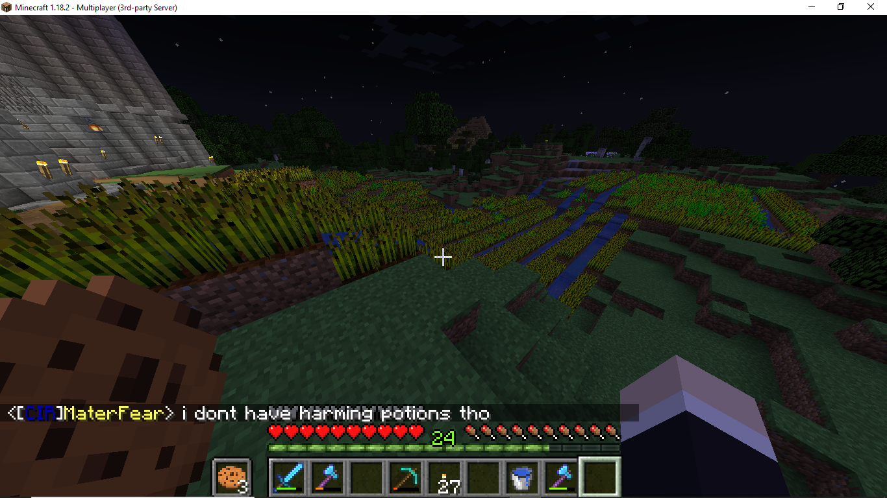
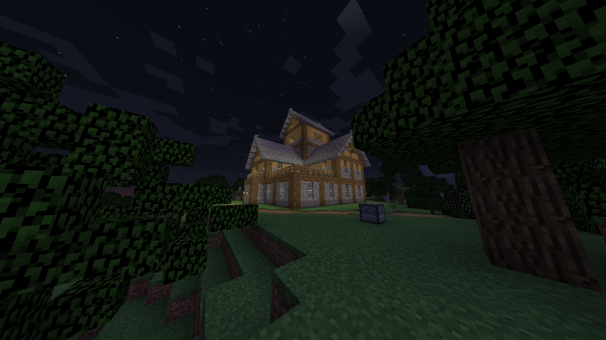

Jackie's house and the castle after the attack.
.png)
.png)
Chungustan
Chungustan was the first base to be created after Liminal Africa on Moocraft, this time using /wild. The base consisted of mainly Billy, TJ, Rosha, Jackie, Jacob, Geret, and Evelyn. This base, similar to Liminal Africa, was short lived, however it was not the fault of any Wpwapian. Chungustan was griefed by the players hilaryclinton420 and leafster, according to user zwbw10. zwbw10 explained how leafster and hilaryclinton420 had begun griefing the base after zwbw10 was showing his friend around, and the two were killed before they could stop the attack. A detailed griefing summary is provided below for more information.
Aerial view of Chungustan a day before it was attacked.
Another aerial view of Chungustan, with the unfinished mausoleum and part of the port in sight.
A map of Chungustan which was created before the lighthouse was erected.
The port of Chungustan.
Evelyn's underground base in Chungustan, the only finished structure that survived the attack.
The stack of trees above Jacob's house, which reached up to build limit.
A fire which had broken out on the port a day before the grief.
Inside the port's bar.
The unfinished mosque of Chungustan.
A view of the farm behind the castle at Chungustan before it was expanded.
TJ, Jackie, and a man behind a certain slaughter gather resources for the beacon at the tree farm.
The crown jewel of Chungustan, the Lighthouse of Alexandria, which was situated next to the canal.
Jackie's house in Chungustan, one of the first structures to be built.
zwbw10 visiting our base the day before it was attacked, shown in front of TJ's house.
Signs left by the griefers.
Jackie's house and the castle after the attack.
Parrot, left untouched after the griefings.
.png)
Fake discord tag left by the griefers.
.png)
The port and mosque, left destroyed.
.png)
The Lighthouse of Alexandria, covered in lava.
.png)